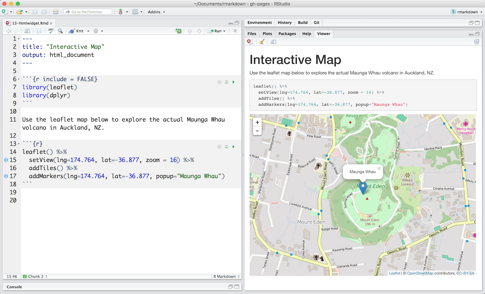
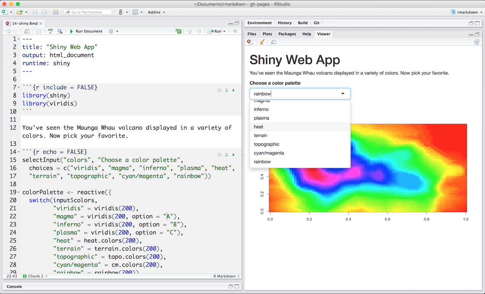

Para bajarlo ir a https://cran.r-project.org/,
Control de Versión
https://git-scm.com/
RStudio Desktop https://www.rstudio.com/products/rstudio/download2/
Para esto hay que:
Tools\Global OptionsGit\SVN, el anteúltimo icono.Si utilizaron la instalación por defecto de Git la ruta es C:\Program Files\Git\bin si tienen Windows 32 bits o C:\Program Files (x86)\Git\bin si tienen Windows 64 bits. La carpeta Program Files puede llamarse Archivos de Programa si tienen Windows en español.
Ok.Tools\Global Options..., luego a la pestaña de Git\SVN.create RSA key. Pueden poner una Passphase.Create, les va a aparecer un cartel y ponen Ok.View public key. Copian la clave.Settings.SSH and GPG keys.New SHH Key.Add SSH KeyUna vez que abre un archivo, como por ejemplo un script de R, un panel de edición se abre en la parte superior izquierda.
Hay dos maneras básicas de trabajar con RStudio.
source().Run arriba del panel de edición,Run).Para ejecutar un bloque de código: + Seleccionálo y después solo presiona Run.
Si has modificado una parte del bloque que has ejecutado recién podés usar el botón a continuación, Re-run the previous region.
Read, Eval, Print
[1] 101
Si estás usando R desde la linea de comando en vez de dentro de RStudio, hay que presionar Ctrl+C en vez de Esc para cancelar el comando. Esto también se aplica a usuarios de Mac también.
Cancelar un comando no es útil solamente para anular comandos incompletos: también podés cancelar una computación que R está ejecutando (por ejemplo, si está tomando demasiado tiempo), o para eliminar el código que estás escribiendo actualmente.
De mayor a menor precedencia:
(, )^ o **/*+-Los números muy grandes o pequeños se imprimen en notación científica:
[1] 2e-04que es una abreviatura de multiplicar por 10^XX". Por lo que 2e-4 es una abreviatura de 2 * 10^(-4).
Uno mismo puede entrar números en notación científica:
[1] 5000R tiene muchas funciones matemáticas incorporadas. Para llamar una función simplemente escribimos su nombre, seguido por paréntesis de apertura y cierre. Cualquier cosa dentro de los paréntesis es llamado argumentos de la función:
[1] 0.841471No se preocupen por recordar todas las funciones en R. Se pueden buscar en Google, o si recuerdan como comienza el nombre de la función, pueden presionar la tecla Tab para usar la función de autocompletado de RStudio.
Escribiendo un signo de pregunta ? antes del nombre la funcion abrirá la página de ayuda de esa función.
También podemos hacer comparaciones en R:
[1] TRUE| Operador | Comparación |
|---|---|
| == | igual |
| != | distinto, |
| > | mayor |
| < | menor |
| >= | mayor o igual |
| <= | menor o igual |
Un advertencia acerca de la comparación de números: nunca usar == para comparar dos números a menos que sean integers (un tipo de data que se usa para representar números enteros específicamente).
Las computadoras solo pueden representar números decimales con un cierto grado de precisión. Por lo que dos números que cuando son impresos por R se ven iguales, pueden tener representaciones subyacentes diferentes y por lo tanto ser diferentes por un pequeño margen de error (llamado Machine numeric tolerance)
En su lugar, deberías usar la función all.equal
Para más información, leer: http://floating-point-gui.de/
Podemos guardar los valores en variales usando el operador de asignación <-, de esta forma:
La asignación de valores puede contener la variable que esta siendo asignada:
Los nombres de la variables pueden contener letras, números, guiones bajos y puntos.
No pueden empezar con un número o guión bajo ni pueden contener espacios.
Distintas personas usan distintas convenciones para nombrar variables con nombres largos, incluidos:
Cual usar es una decisión individual (o del proyecto), pero hay que ser consistente
Una consideración final de lo que hay estar atento es que R está vectorizado, lo que significa que las variables y funciones pueden tener vectores como valores. Por ejemplo:
[1] 1 2 3 4 5[1] 2 4 8 16 32[1] 2 4 8 16 32Hay algunas funciones muy útiles para interactuar con la sesión de R.
ls listará todas los objetos (funciones y variables) almacenados en el entorno global (tu sesión de trabajo en R)
ls ocultará cualquier objeto cuyo nombre empiece con un punto “.” por defecto. Para listar todos los objetos, hay que tipear ls(all.names=TRUE).
Podés usar rm para eliminar objetos que no sean necesarios:
Si tenés muchos objetos en tu entorno y querés borrar todos ellos, podés pasar el resultado de ls como argumento de la función rm:
En este caso hemos especificado que el resultado de ls sea usado por el argumento list en rm. Cuando asignamos valores a argumentos por nombre, ¡hay que usar el operardor =!
¡Presten atención cuando R hace algo inesperado! R tira errores, como el de arriba, cuando no puede proceder con un cálculo. Los Warnings (advertencias) por otro lado generalmente significa que la función se ejecutó, pero que probablemente no ha funcionado como se esperaba.
En ambos casos, el mensaje que imprime R generalmente contiene pista de como arreglar el problema. Aunque a veces pueden ser algo crípticos y requieran cierta experiencia saber que es lo que está pasando.
Los paquetes de R son colecciones de funciones o a veces datos, que son justamente empaquetadas.
Añaden funciones que no están presentes en R.
installed.packages()install.packages("packagename"), donde packagename es el nombre del paquete, entre comillas.update.packages()remove.packages("packagename")library(packagename)¿Cuál de los siguientes nombres son válidos como nombre de variable?
¿Cuál será el valor de cada variable luego cada comando en el siguiente código?
Ejectuta el código anterior y escribe un código para comparar mass y age ¿Es mass más grande que age?
Limpia el entorno eliminando las variables mass y age.
Instala los paquetes: ggplot2, plyr, gapminder